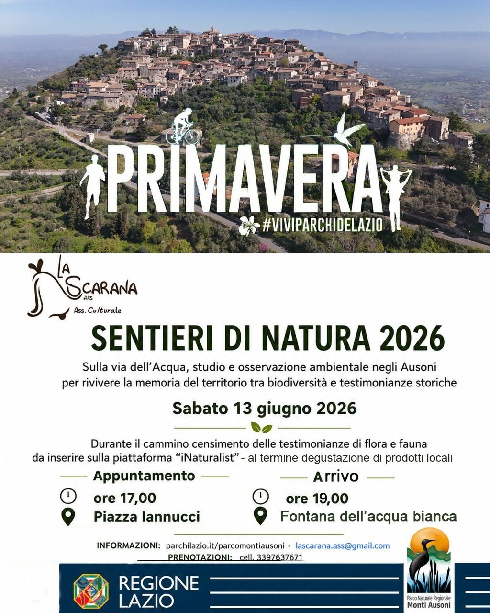
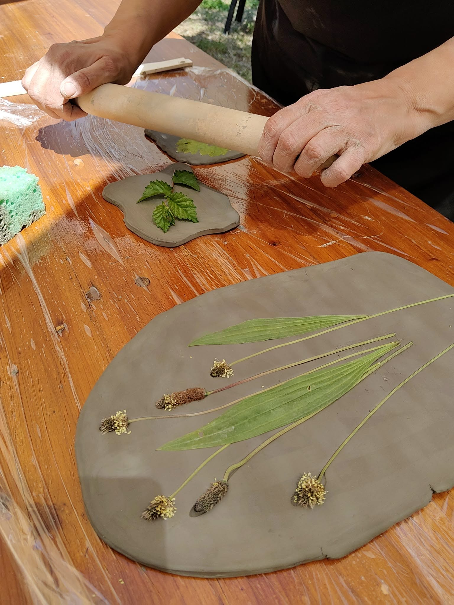

Eventi
In questa pagina puoi scoprire gli appuntamenti imminenti e le nostre storiche manifestazioni annuali che animano il borgo di Castro dei Volsci.
Eventi in Programma
Scopri le serate speciali, le cene a tema e i laboratori mensili fuori dal programma storico.
Sentieri di Natura 2026
13 Giugno 2026
Partenza: Piazza Iannucci, ore 17:00
Arrivo: Fontana dell'Acqua Bianca, ore 19:00
Partecipa alla passeggiate sulla vecchia Castro/Pastena con il Parco Naturale Regionale Monti Ausoni e Lago di Fondi e contribuisci a monitorare flora e fauna particolare di casa nostra.
Richiedi info
.jpg)
Al tempo dei Cavalieri - 2° Edizione
26 Luglio 2026
Centro Storico, Castro dei Volsci
Rievocazione storica immersiva accompagnata dal suggestivo corteo "Vestire il Tempo". Un tuffo nel passato in cui il centro storico si trasforma in un vero e proprio spaccato di vita medievale per celebrare le antiche vicende dei Signori di Castro.
Richiedi infoNuovi fiori, stesse emozioni: Laboratorio di manipolazione e mito
08 Agosto 2026
Oliveta Pratosantissimo
C’è qualcosa di ancestrale nel manipolare l’argilla all'ombra degli ulivi. L'oliveta Pratosantissimo si trasformerà in un laboratorio a cielo aperto, unendo mani, terra e natura in un’esperienza indimenticabile. Insieme ad Associazione La Scarana Aps e Bramasole Kéramos si vivrà una giornata dedicata alla bellezza e alla lentezza.
Richiedi info
.jpg)
Premiazione "Rime dal Borgo" - 3° Edizione
29 Agosto 2026
Piazza Torre dell'Orologio, Castro dei Volsci
Serata conclusiva e premiazione del Concorso Internazionale di Poesia. Un appuntamento imperdibile nato per dare voce all'anima profonda della Ciociaria, premiando opere capaci di restituire la magia, le tradizioni e il silenzio dei borghi italiani.
Richiedi infoI Nostri Eventi Annuali
Le tre grandi manifestazioni fisse che scandiscono l'estate di Castro dei Volsci.
Borgo in Festa
01 Giugno di ogni anno
Evento organizzato in collaborazione con altre associazioni e imprenditori privati che attraverso un percorso del gusto combina degustazioni di prodotti locali, artigianato, musica popolare e storie da ascoltare attraverso i vicoli del centro storico.
Al Tempo dei Cavalieri
Fine Luglio
Una delle manifestazioni più suggestive per il borgo, il cui centro storico è trasformato in un vero e proprio spaccato di vita medievale e rinascimentale. L'evento è una rievocazione storica immersiva volta a celebrare le antiche vicende dei Signori di Castro dei Volsci, con costumi fedelmente ricostruiti dai nostri artigiani.
Rime dal Borgo. I vicoli raccontano
Fine Agosto di ogni anno
Concorso Internazionale di poesia nato per dare voce all’anima profonda della Ciociaria. Un'iniziativa pensata non solo per celebrare la tecnica letteraria, ma per restituire il "sentire" dei luoghi, premiando opere capaci di restituire la magia e il silenzio dei borghi italiani.
Archivio Storico
I progetti e le attività svolte nel corso degli ultimi anni.
2024 - 2025
.... Esposizione dei presepi artigianali e luci d'artista nel centro storico.
.... Letture in piazza e momenti di riflessione collettiva.
.... Rassegna cinematografica all'aperto sotto le stelle.